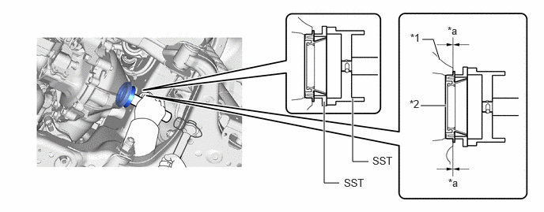
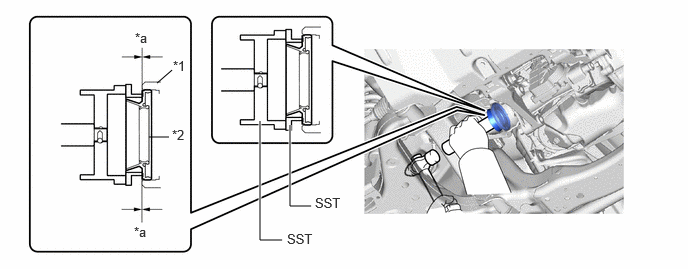

| Last Modified: 10-07-2025 | 6.11:8.1.0 | Doc ID: RM100000002GJIS |
| Model Year Start: 2024 | Model: Tacoma | Prod Date Range: [12/2023 - ] |
| Title: AXLE AND DIFFERENTIAL: FRONT DIFFERENTIAL SIDE GEAR SHAFT OIL SEAL: REPLACEMENT; 2024 - 2026 MY Tacoma Tacoma HV [12/2023 - ] | ||
REPLACEMENT
CAUTION / NOTICE / HINT
The necessary procedures (adjustment, calibration, initialization, or registration) that must be performed after parts are removed, installed, or replaced during the front drive shaft oil seal removal/installation are shown below.
Necessary Procedures After Parts Removed/Installed/Replaced:
|
Replacement Part or Procedure |
Necessary Procedures |
Effects/Inoperative when not Performed |
Link |
|---|---|---|---|
|
Suspension parts |
Rear television camera assembly optical axis (Back camera position setting) |
Parking assist monitor system |
|
|
Parking assist ECU initialization |
Panoramic view monitor system |
|
HINT:
When the cable is disconnected/reconnected to the auxiliary battery terminal, systems temporarily stop operating. However, each system has a function that completes learning the first time the system is used.
- Learning completes when vehicle is driven
Effect/Inoperative Function When Necessary Procedures are not Performed
Necessary Procedures
Link
Stop and start system
Drive the vehicle until stop and start control is permitted (approximately 5 to 60 minutes)
![2024 - 2026 MY Tacoma Tacoma HV [12/2023 - ]; STOP AND START: STOP AND START SYSTEM: PRECAUTION](../../../../stylegraphics/info.gif)
Front camera system
Drive the vehicle straight ahead at 35 km/h (22 mph) or more for 5 seconds or more.
- Learning completes when vehicle is operated
normally
Effect/Inoperative Function When Necessary Procedures are not Performed
Necessary Procedures
Link
Air conditioning system
After the ignition switch is turned to ON, the servo motor and expansion valve standard position is recognized.
-
Power running board system
After turning the ignition switch to ON, opening the door, and then fully deployed the power running board system, close the door and stowed the power running board system.
Power tail gate system
Reset tail gate close position.
CAUTION:
- To prevent burns, do not touch the engine,
exhaust pipe or other high temperature components
while the engine is hot.

- Be sure to perform this procedure with several
people as the front differential carrier assembly is
very heavy.

*a
Object Exceeding Weight Limit of Transmission Jack
- Be sure to follow the procedure described in the repair manual, or the transmission jack may suddenly drop or a part may fall.
PROCEDURE
PROCEDURE
1. DRAIN DIFFERENTIAL OIL
Click here
2. REMOVE FRONT DRIVE SHAFT ASSEMBLY LH
Click here
3. REMOVE FRONT DRIVE SHAFT ASSEMBLY RH
HINT:
Use the same procedure described for the LH side.
4. REMOVE FRONT DRIVE SHAFT OIL SEAL LH
|
(a) Using SST, tap out the front drive shaft oil seal LH. 09308-00010 |
|
5. REMOVE FRONT DRIVE SHAFT OIL SEAL RH
HINT:
Use the same procedure described for the LH side.
6. INSTALL FRONT DRIVE SHAFT OIL SEAL LH
|
*1 |
Differential Carrier |
*2 |
Front Drive Shaft Oil Seal LH |
|
*a |
Gap |
- |
- |
(1) Using SST and a hammer, tap in a new front drive shaft oil seal LH.
09223-15020 09502-12010 09950-70010 09951-07150Standard oil seal gap:
0 to 0.7 mm (0 to 0.02756 in.)
NOTICE:
- Make sure that the lip of the front drive shaft oil seal is inserted into SST before tapping in the front drive shaft oil seal LH.
- Do not damage the front drive shaft oil seal LH.
7. INSTALL FRONT DRIVE SHAFT OIL SEAL RH
|
*1 |
Differential Tube |
*2 |
Front Drive Shaft Oil Seal RH |
|
*a |
Gap |
- |
- |
(1) Using SST and a hammer, tap in a new front drive shaft oil seal RH.
09223-15020 09502-12010 09950-70010 09951-07150Standard oil seal gap:
-0.5 to 0.5 mm (-0.0197 to 0.0196 in.)
NOTICE:
- Make sure that the lip of the front drive shaft oil seal is inserted into SST before tapping in the front drive shaft oil seal RH.
- Do not damage the front drive shaft oil seal RH.
8. INSTALL FRONT DRIVE SHAFT ASSEMBLY LH
Click here
9. INSTALL FRONT DRIVE SHAFT ASSEMBLY RH
HINT:
Use the same procedure described for the LH side.
10. ADD DIFFERENTIAL OIL
Click here